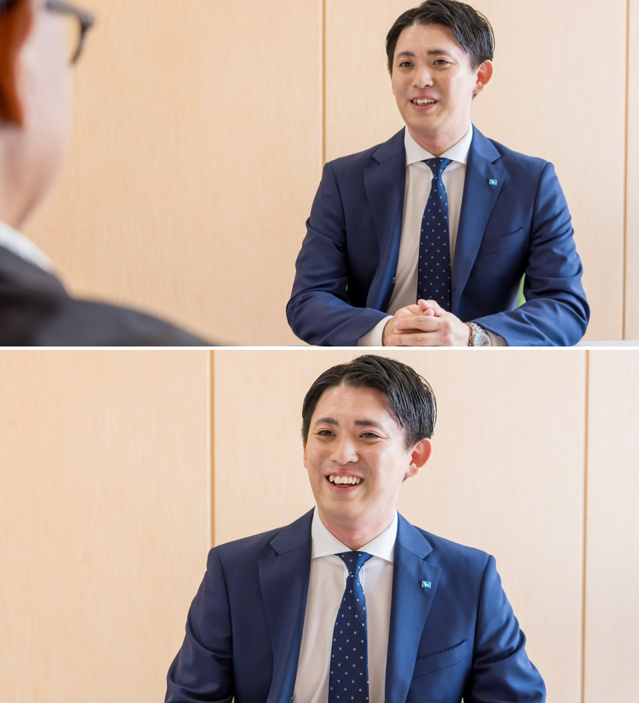
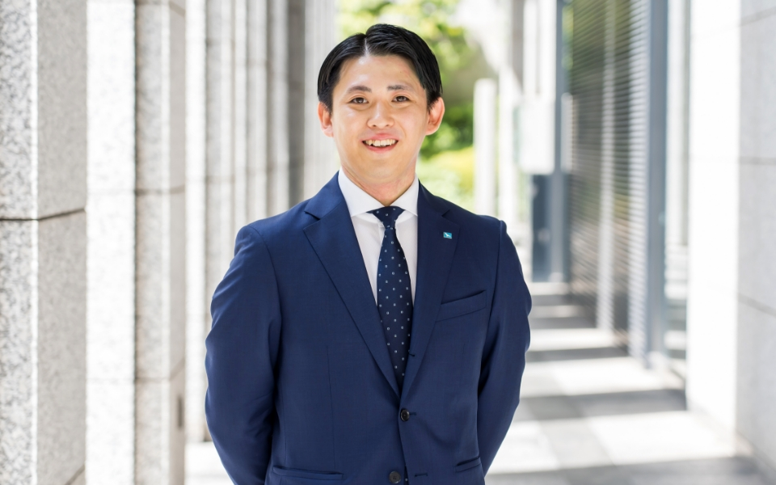

2022年入社・営業 M・H
「お客様と長くお付き合いできることが、この会社の魅力でした」
2022年入社の営業・M先輩。謙虚で真面目な仕事ぶりを見せつつ、意外とノリのいい性格で、先輩や同期、後輩からも慕われる愛されキャラです。
そんなM先輩に、ご自身のことやアミックスのいろいろを聞いてみました！
- 入社のきっかけは？
- もともと家族が不動産関連の仕事に携わっていたこともあり、いろいろ話を聞いていくうちに、自分も不動産業界で仕事がしたいと思い就活していました。そのなかでもアミックスなら、建築から管理、改修工事、出口の売却まで担当できることを知り、お客様と長期的な関係を構築できることに魅力を感じて入社を決めました。 
- どんな仕事をしていますか？
- 足立・草加の担当エリアを中心に、アパートの建築提案の営業や新規地主様開拓、オーナー様へ建築中の物件の状況報告、やりとりしている業者様や金融機関の訪問などを行っています。
エリア担当制で営業をしているので、自分のお客様同士が実はお知り合いだったことがわかり話が盛り上がることもあります。地域密着ならではの人と人とつながりに面白さを感じますし、大切にしていかなきゃなと思っています。 - 1日のスケジュールを教えてください！
-
8:45
出 社
遅刻厳禁！ どこのオフィスも駅チカで通勤しやすいと思います♪
9:00メールチェック
出社したらまずメールを見ます。
10:00お客様・業者様へのアポ訪問
既存のオーナー様だと午前で1〜2件、業者様相手だと3〜4件回ることもあります。「営業に行く」といいうよりも、「最近どうですか？」のスタンスで密にコミュニケーションを取ることを大切にしています。
12:00昼 食
普段は東東京支社で勤務しているので、亀有駅周辺のお店によく行きます。おすすめは「亀有メンチ」！ とっても美味しくて、よくお客様を連れて行ったりします。
13:00担当エリアの業者・地主開拓
地主様の開拓は少しオーソドックスなやり方で、DMを持ってお宅を訪問したりします。地域の不動産業者様にも、建築や管理でお困りのオーナー様がいないかなど情報をいただくために定期的に通っています。
16:00営業から帰社
いただいた売買情報やご相談について調査したり、今後案件をどう進めればよいかなど上司へ相談したりします。
18:00退 勤
残りの事務作業などをすませて退勤します。
19:15帰 宅
動画や映画などを見ながらリラックスして過ごします。また明日から頑張れるように、オンとオフの切り替えはしっかりしています！
- 仕事をする上で、心がけていることはありますか？
- 「お客様のお悩みやご要望をこちらから引き出すこと。」
「他部署の方がどんな仕事をされているか把握すること。」
「何事も興味を持って積極的に聞くこと。」
この3つは特に自分でも心がけていることです。入社年度が浅く知識量もまだまだな部分がありますが、とにかくひたむきに向き合うことでいろいろなお話が伺えたりもするので、さらに良い提案ができるようになるにはどうすればいいか、つねに考えて動いています。
また、建築部門やリフォーム部門の人たちにも時間を見つけては積極的に声をかけています。話を聞くことで、自分の営業や知識に活かすこともできますし、周りを巻き込むことが自身の成長にもつながると思っています！ - 新入社員のみなさまにヒトコト！
- 不安もあるかと思いますが失敗を恐れずいろいろな業務に挑戦してみてください。困ったときは周りの先輩方が何とかしてくれます！（笑） 僕もそんな先輩になれるように頑張るので、一緒に仕事ができるのを楽しみにしています！ 